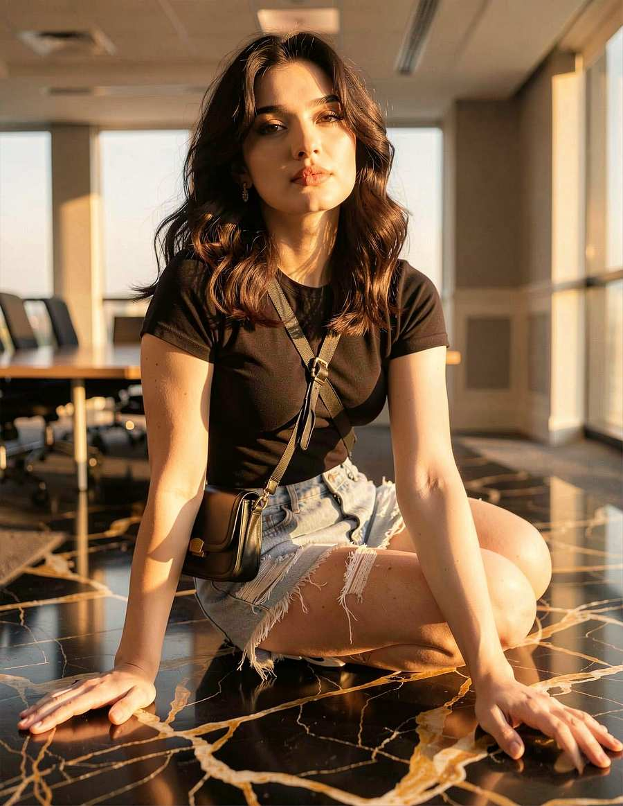
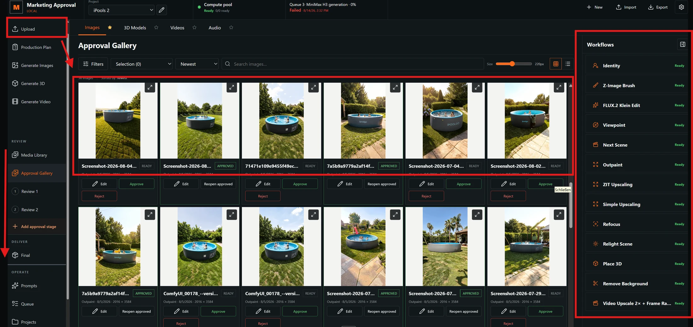
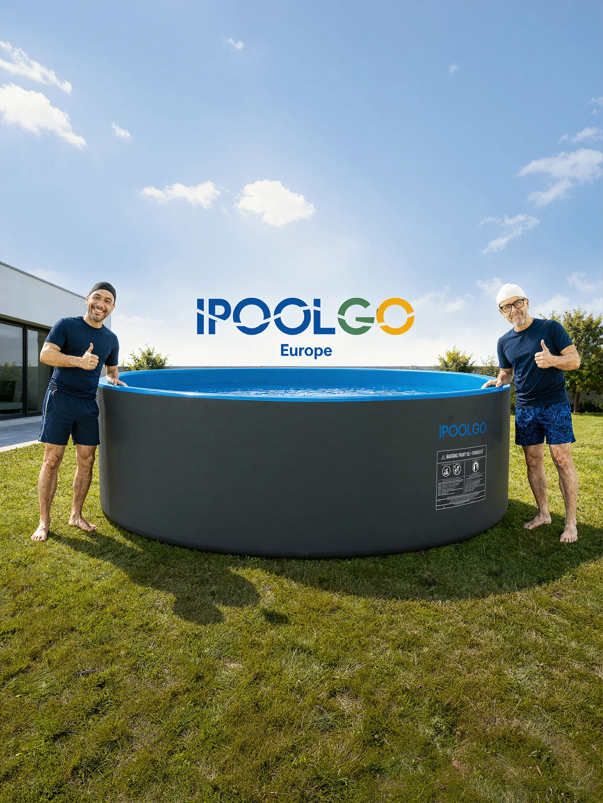
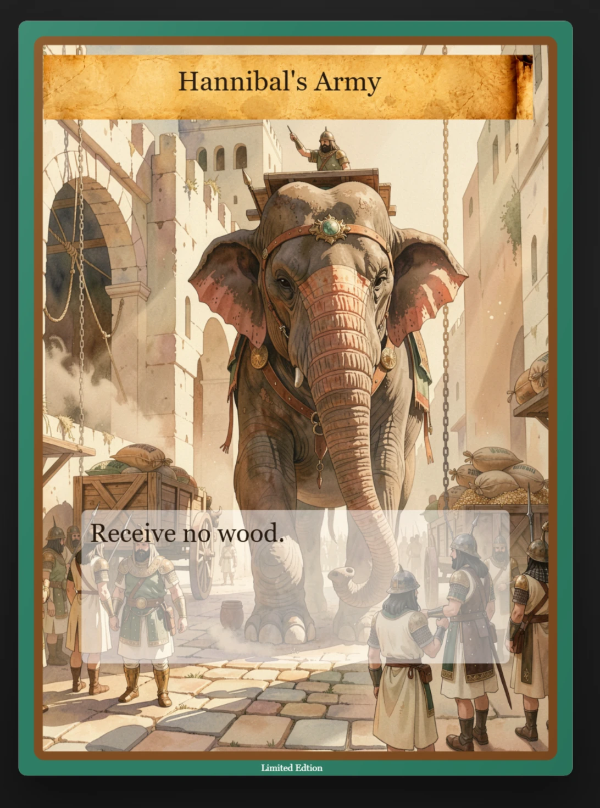

01 / Consistency
Character Consistency
One identity carried through three outfits, varied scenes, viewpoints, and lighting conditions.
Open studyApplied image generation
From individual images to repeatable production systems
Five focused studies in consistency, model training, workflow engineering, commercial content, and art direction. Each one shows a different layer of turning generative tools into controlled visual work.

01 System index
Open one study for its references, outputs, decisions, and production context.
01 / Consistency
One identity carried through three outfits, varied scenes, viewpoints, and lighting conditions.
Open study
02 / Model control
A concept LoRA for controllable viewpoint and composition, evaluated through direct comparisons and a selected output set.
Open study
03 / Production
A purpose-built production interface for background work, upscaling, outpainting, review, and continued editing.
Open study
04 / Client pipeline
Source media transformed into polished social stills and vertical video through a reusable content pipeline.
Open study
05 / Art direction
A coherent illustration and information system built across 184 cards and four civilizations.
Open study